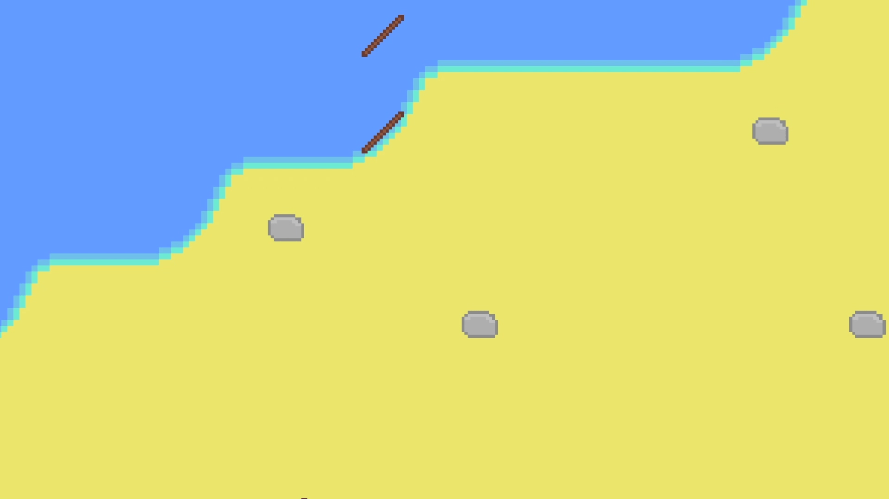
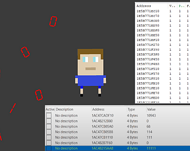
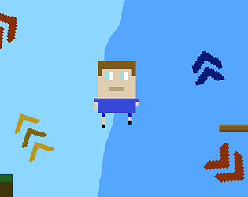
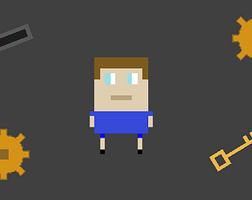
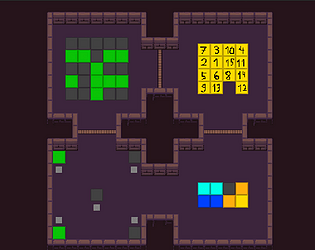
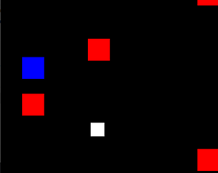
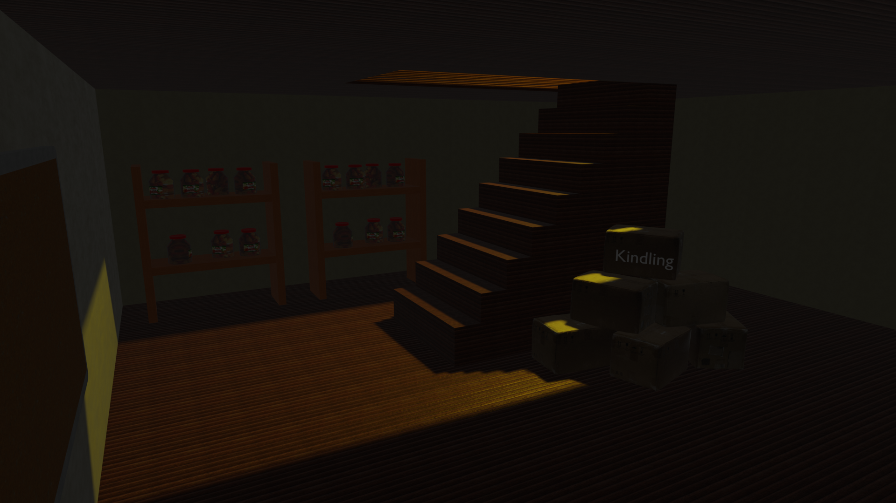
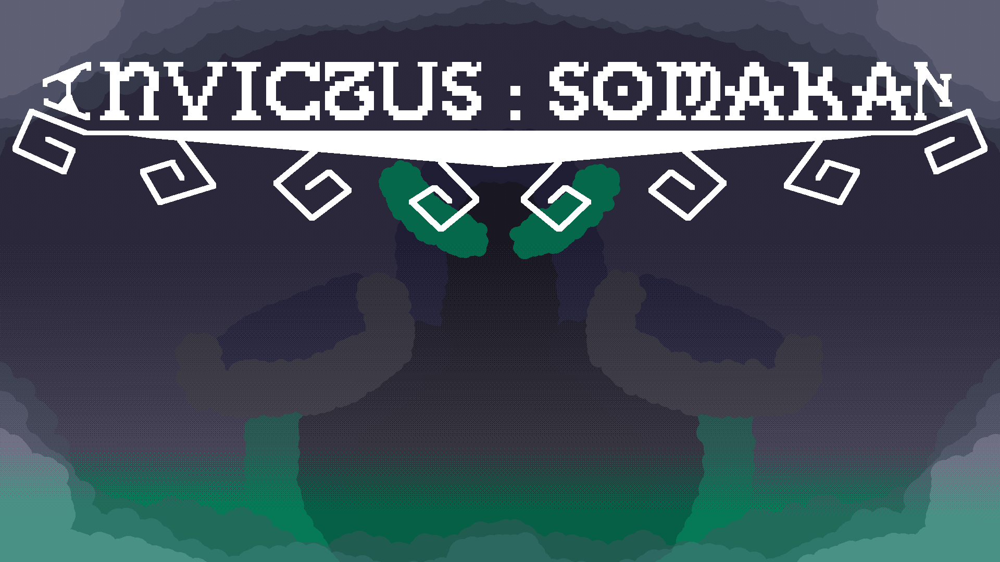
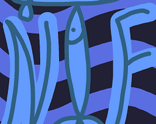
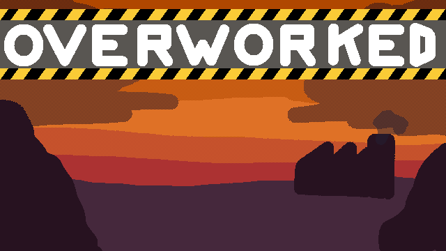

About Me
Hi, I'm Kris, a passionate game developer from Bulgaria. I am 18 years old, currently 12th grade in TUES.
When I'm not coding, you'll find me playing games, experimenting with new engines, messing around with Linux or diving into modding communities.
My Games

Stranded Shores
An open source 2D top-down survival game, originally made for my 12th grade diploma project.

Cheat Me
A unique puzzle game where you use Cheat Engine to solve puzzles.

Jump and Warp
A short platformer game with the gimmic of warping between two different dimensions.

Match And Scratch
A 2D top-down puzzle game. Also my first game ever.

Path of Puzzles
A short 2D puzzle game about solving randomly generated puzzles. Originally made for a school project. My first Unity game.

Square Fall
A simple game I made when learning SFML.
Games I've worked on

Six Nights in Frenski's Basement
A funny FNaF fan game me and my friends made, inspired by our history teacher.

Invictus Somakan
A 2D roguelite game. Originally made for me and my friends' 11th grade summer practice.

Not the Fish!
A 2D short top-down survival game. Originally made for the Brackeys Game Jam 2024.2.

Overworked
A 2D co-op factory game. Originally made for HackTUES11.